实验注册表 · ngram-gap-lab
唯一权威登记表 · 维护时间：2026-08-30 · 主线权威数据源 data/runs_fixed/*_fixed/；scaling 专属数据源 data/runs_scaling/*_fixed/ · 口径见 agents.md §1 · 数值细节见 experiment-log.md 与 experiment-lines.md。主实验叙事见 《主实验与机制证据 · v5 clean standard》；清理前的完整页面与图源已冻结为 历史快照。
① 命名法 Jargon（先读这个）
v50 / v10 / v2 / v3 / v4 / v5 / M / L / N / S / _fixed 是什么意思？（点击展开/收起）
仓库里存在 三套独立的命名系统，叠在一起就容易懵：
| 记号 | 含义 | 说明 |
|---|---|---|
| v50 | 评估节奏：val + freq-bin 每 50 步评估一次 | 最早期的注入点实验（M1）用；2000 步只有 40 个点，曲线粗。 |
| v10 | 评估节奏：val + freq-bin 每 10 步评估一次 | 后来定的标准（VAL_LOSS_INTERVAL_STEPS = 10）；2000 步 200 个点，能看到 epoch replay 台阶细节。这就是 M2 的"v10"。 |
| v2 波次 | 重刷波次 2：优化器新标准 β₂=0.99（无动量）+ 表 LR ×2 | 2026-08-24 用户拍板；run 后缀 _v2_fixed。模型本身没变，变的是优化器口径。 |
| v3 波次 | 重刷波次 3：freq-bin train 侧改用当前训练 batch（online） | 2026-08-25 用户拍板；run 后缀 _v3_fixed。之前是 4-batch 诊断窗口，判为不一致做法。 |
| v4 波次 | 重刷波次 4：constant schedule 诊断 | 历史探索；零 warmup 的 constant 不作为当前主线。 |
| v5 波次 | 当前唯一主线：clean 双表、current-batch online loss、短 warmup 后恒定 LR | run ID 使用 v5 家族名，权威输出目录统一以 _fixed 结尾。step 1–100 从 0.25×LR 升至 6e-4，其后恒定；bf16、不 compile。 |
| M1–M7 | 主线 nanoGPT 实验线编号 | M2=注入点消融、M3/M4=表优化器、M5/M6=shard 剂量、M7=短 epoch×β₂。 |
| L1–L5 | toy 理论任务线（独立小实验） | L1 查表记忆、L2 Markov 闭式解、L3 采样律、L4 幂律、L5 优化器伪影。 |
| N1–N4 | 自然语言 5gram 实验 | order=5 表在真实语料上的 gap。 |
| S1 | 三轴 scaling（epoch / table / frequency） | 极简 setting 下的 scaling 实验线，结果在 data/runs_scaling/。 |
| _fixed | 修复 bug 后的权威数据标记 | 主线结果在 runs_fixed，scaling 结果在 runs_scaling；当前主线为 _v5_fixed。 |
| current-batch / online | train loss 取"当前训练 batch" | v3 起的标准；与 online train_loss 同一 forward，零额外计算。 |
| v5 setting | RMSProp (0,0.99) · 表 LR 128×（实际 0.0768）· backbone LR 0.0006 · warmup_constant(100) | 当前 v5 标准 launcher 显式传 --table_betas 0.0,0.99 --table_lr_scale 128.0 --lr 0.0006 --lr_schedule warmup_constant --warmup_steps 100；历史 2× 仅作对照。 |
一句话：v50/v10 是“评估多密”，v2–v4 是历史重刷口径，v5 是当前唯一主线，M/L/N/S 是“哪条实验线”，_fixed 是“修复后、可追溯的数据标记”。
② 实验总表（行内嵌图；comments 列可手填）
合并单元格 = 同大类/同 setting 共享；图片缩略图已放在对应实验行的第四列，点击图片可查看原图；comments 列白框可直接点入填写（本地打开时输入内容不会保存，仅供浏览标注）。
打开独立《Gap 的数学理论与实验证据》：理论报告只引用本表中的稳定锚点，不把解析 toy、历史 compile 和当前标准 run 混为同一证据等级。
| 实验大类 | 实验名称 | 实验 setting | 统计处理 / 画的图（图已内嵌） | 状态 | comments（手填） |
|---|---|---|---|---|---|
| 主线 注入点 |
M2-v5 注入点消融 （当前唯一主线 · table LR 128×） |
input / y / v / nogram；2000 步；clean R=2²⁰；lr=6e-4、warmup_constant(100)、table LR scale=128；bf16、不 compile；train loss=当前 batch online loss；seed 42 |
128× 标准批的原始 online loss/gap 曲线（只以 3 点均值连线），以及 2× vs 128× final gap 对比柱状图。
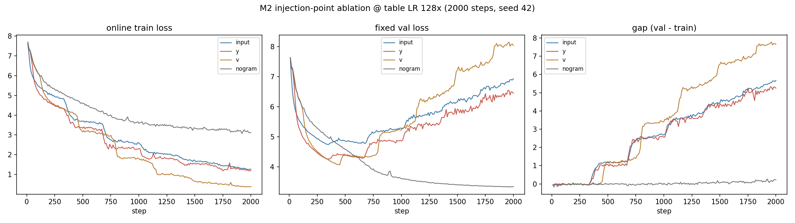  nglab1x_{input,y,v,nogram}_v5_128x_freq10_fixed（2026-08-29 标准切 128× 后重刷，见 experiment-log §35）；点为原始 online 记录，线为 3 点均值。频率统计见下一行。
|
✅ 128× 四臂完成 @2000：input/y/v/nogram=5.672/5.248/7.648/0.227；高 LR 放大后端注入 gap（v>y>input），nogram 贴零 | |
| M2-v5 current-batch frequency refresh （128× 重刷） |
input / y / v / nogram；seed 42、2000 步；clean R=2²⁰；lr=6e-4、warmup_constant(100)、table LR scale=128；bf16、不 compile；val / frequency / exact-frequency / table RMS 每 10 步 |
每个 branch 画 input train / fixed-val token fraction 双柱，以及 final per-bin gap 原始点与细 3 点视觉连线。
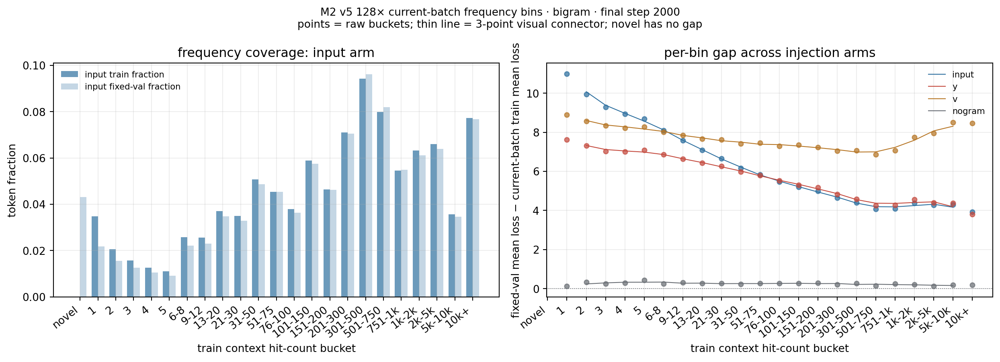 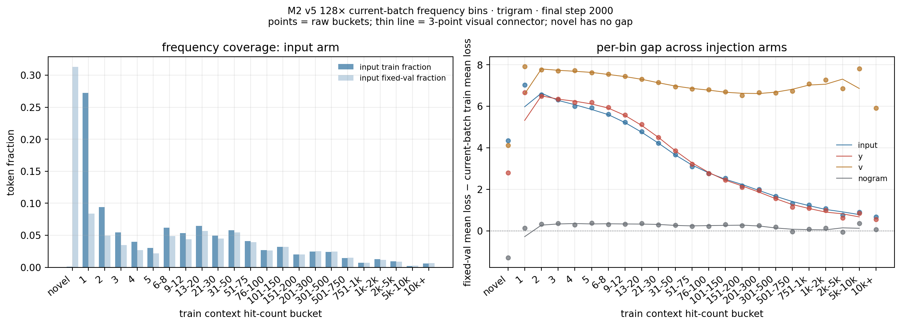 nglab1x_{input,y,v,nogram}_v5_128x_freq10_fixed/freq_bin_loss.jsonl 的 step 2000；train 侧直接复用该 step 当前训练 batch 的 pre-update per-token loss。novel 没有 train loss，故不定义 gap。
|
✅ 4/4 完成 @128×；step-2000 input/y/v/nogram gap=5.672/5.248/7.648/0.227 | ||
| 剂量 扫描 |
M5-v5 fixed-step 剂量扫描 （128× 重刷） |
0.25x、0.5x、0.75x、1.5x、2x、2.5x、3x、4x、5x、6x、8x；input；2000 步；v5 SSOT、table LR scale=128 | 128× 标准批的 final gap 随剂量曲线；当前带 frequency 的正式证据见下方 M5-v5 frequency refresh。
 nglab*_input_v5_128x_freq10_fixed run 的 summary；gap 随剂量单调下降，0.25× 严重过拟合（10.9）、8× 转负（−0.06）、逼近 nogram。
|
✅ 11/11 128× 端点；gap 10.895（0.25×）→ −0.055（8×） | |
| M6-v5 epoch 对齐批 | 历史 5-epoch 对齐批；当前正式 epoch-length 阵列见 S1 v5 三 epoch 行。历史图不在当前登记表展示。 | ⚠️ 历史口径；由 S1 v5 三 epoch 阵列取代 | |||
| M5-v5 frequency refresh （128× 重刷，专供剂量×频率证据） |
11 个非 1x shard dose、input、2000 步、table LR scale=128；每 10 步 fixed val + current-batch freq-bin；每个 dose 强制绑定对应 train-set frequency index；1x 由 M2 四臂 frequency-refresh 单列重跑；其余 v5 SSOT | 11/11 个非 1x dose（0.25×–8×）均已验收，绘制 bigram/trigram final raw freq-bin gap heatmap 与完整 loss/gap 轨迹；不以旧批补位。
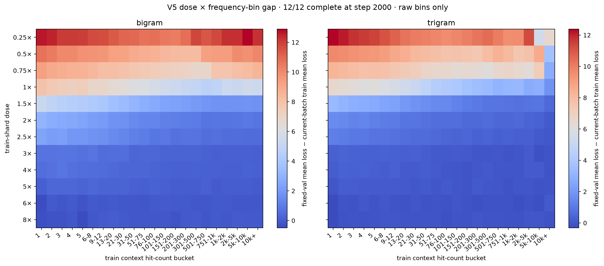 nglab*_input_v5_128x_freq10_fixed 的 step-2000 summary、online train / fixed-val 曲线与 current-batch frequency bins；novel 没有 train loss，不定义 gap。
|
✅ 11/11 非 1x 完成 @128×；含 M2 的 1× 后共 12/12 frequency-refresh 证据 | ||
| M6 epoch 对齐批（e6，实际 5 epoch） | 对齐 epoch 数（5 epoch）；0.25x–3x；无 LR schedule（勘误见 log §12） | 历史 epoch 对齐 gap 曲线与 nogram 对照；当前登记表不再展示已被 S1 v5 三 epoch 阵列覆盖的图片。 | ⚠️ 历史且不完整；由 S1 v5 三 epoch 阵列取代 | ||
| 表 优化器 |
M3 Table 优化器 · 1x epoch | RMSProp/AdamW/SGD；LR 剂量（×1/×2/×4）；β₂（0.98/0.99）；1x / 2x epoch | 历史优化器、table-LR 与 β₂ 对照；当前结论由下方 M3b-v5 完整 11 臂曲线覆盖，历史图片不再在当前登记表展示。 | ⚠️ β₂ 结论待修正 | |
| M4 Table 优化器 · 2x epoch | 历史 2x epoch 对照（b2_099 0.64→2.00，+210%）；已由当前 v5 统一预算与完整曲线覆盖，历史图片不再展示。 |
⚠️ 同上 | |||
| M3b-v5 表学习率 × β₂ gate | clean 双表、input、1000 步；RMSProp/AdamW/SGD；scale 0.5–4；β₂ 0.95–0.999；2000 步 seed 43/44 gate | 11 臂 clean grid 的完整 1000-step online train / fixed val / online gap 曲线，以及 table-LR 相邻健康点的末步频率诊断。点为原始记录，细线仅为 3 点视觉连接。
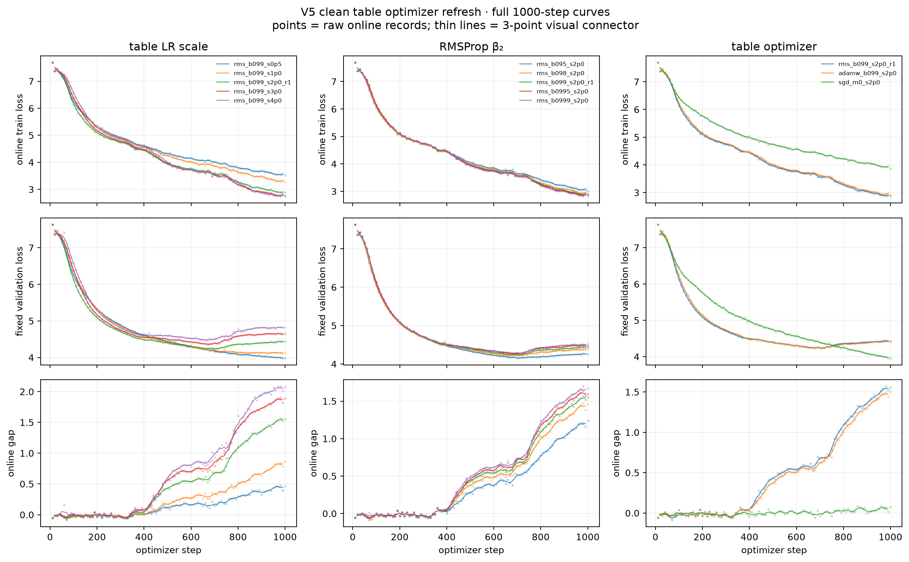 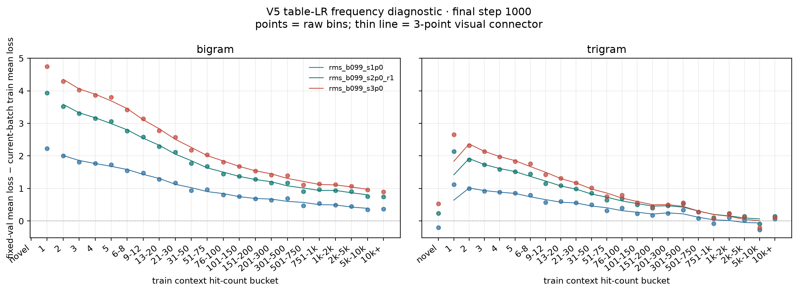 optv5c_*_fixed run 的 step-1000 train_log.jsonl、freq_bin_loss.jsonl 与 table_norm.jsonl；每类日志均 100 条，无 NaN/Inf。频率图只比较 scale 1 / 2 / 3，novel 没有 train loss，故不定义 gap。旧 optv5_rms_* precursor 保留作历史质量参照，但不替代本图。
|
✅ 11/11 完成（seed 42、step 1000）：scale 0.5/1/2/3/4=0.465/0.858/1.551/1.886/2.072；β₂ .95/.98/.995/.999=1.239/1.460/1.594/1.669；AdamW=1.502，SGD=0.078。高 scale gate 与多 seed 复现见下方扩展验证。 | ||
| M7 短 epoch × β₂ | 0.25x/0.5x 短 epoch；β₂=0.99 | 历史 per-epoch 台阶清晰度曲线；当前登记表不再展示已被 v5 epoch-length 阵列覆盖的图片。 | ⚠️ 图未按 _fixed 重生成 | ||
| M3c-v5 高 table-LR × β₂ 收敛批 （optv5f；1000/2000 步） |
table LR scale 8/16/32/64/128 × RMSProp β₂ .99/.999；input；seed 42；1000 或 2000 步；其余 v5 SSOT（backbone 6e-4、warmup_constant(100)、bf16、不 compile、val/freq 每 10 步） | 可读分面图：每个小面板固定一个 table LR scale，面板内只比较 β₂=.99 与 .999；低 scale（0.5/1/2/3/4×）与高 scale（8/16/32/64/128×）同一总览图展示。β₂=.99 使用深蓝实线圆点，β₂=.999 使用橙色虚线方点；1000 步与 2000 步使用不同图形；2000 步图另列 train / fixed val / gap 和 Δgap=(.999−.99)，epoch boundary 用竖线标出。点为原始 online 记录，细线为 3 点视觉连接；正式图已按完整 2000 步批次刷新。
 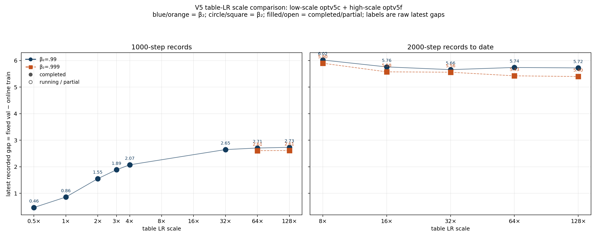 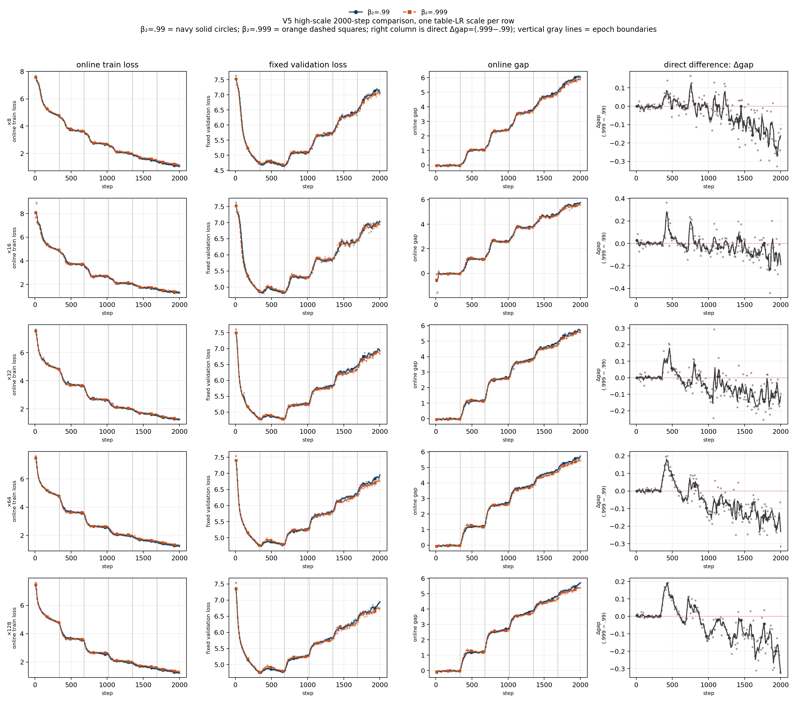 optv5c_*_fixed、optv5e_*_fixed 与 optv5f_*_fixed；点为原始 online 记录，细线为 3 点视觉连接。
|
✅ scale=8/16 的 β₂ gate 与 1000/2000 步收敛臂均完成；scale=16 的 β₂=.95/.99/.995 final gap=2.489653/2.599353/2.598872，spread=4.22%；另有 256/512/1024× β₂=.99 的 2000-step final gap=5.543/5.474/5.335。256×–1024× 未继续单调增大，暂不支持“学习率仍不足”的判断。 | ||
| LR schedule 诊断 （历史混合 setting，非 v5 证据） |
no-gram 纯 backbone；warmdown / warmup-constant / warmup-cosine / constant；不同 base LR；1000 或 2000 步 | 检查不同 schedule 是否造成纯 backbone 的训练、验证与 gap 形态变化；仅作历史 schedule 诊断，不与 v5 主线数值混画。图像转入历史快照。 | ⚠️ 已登记为历史诊断，不纳入当前 setting | ||
| 扩展 验证 |
X1 optimizer × 复现 （128× 重刷） |
RMSProp / AdamW / SGD(m=0)；table LR scale=128；seed 42；1000 步；其余 v5 SSOT | 三种 table optimizer 的 step-1000 final gap 柱状图
 optv5c_{rms,adamw,sgd_m0}_s128x_fixed；RMSProp 与 AdamW 几乎相同，SGD 无动量几乎不学。
|
✅ 完成 @128×；RMS=2.727、AdamW=2.731、SGD=0.047 | |
| X2 clean 表行宽扫描 （128× 重刷） |
bigram/trigram 同步 row width d∈{768,192,48,12}；input；seed 42；1000 步；table LR scale=128；其余 v5 SSOT |
step-1000 final gap 随 clean-table row width 的容量曲线
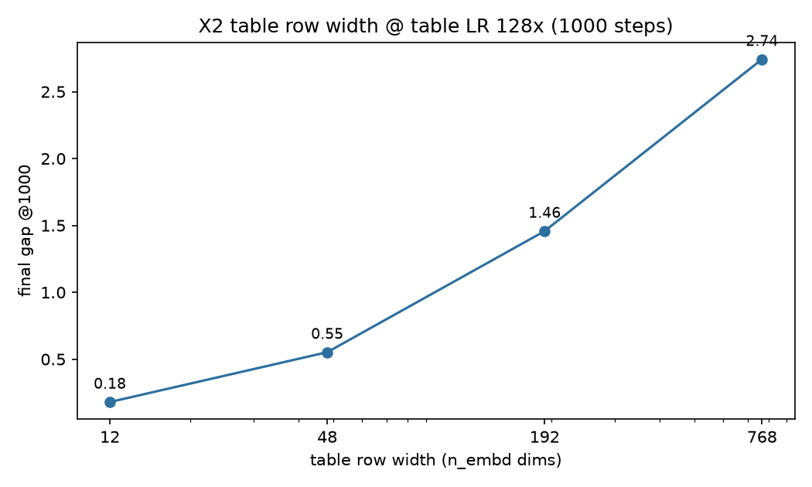 ctbl_dim{768,192,48,12}_input_v5_128x_fixed；gap 随行宽单调上升。
|
✅ 完成 @128×；d=768/192/48/12 的 gap=2.742/1.458/0.552/0.180 | ||
| 因果 干预 |
Causal interventions（v5 · 128× 重刷） | input、1000 步、table LR scale=128、val/frequency=10。核心机制臂：none、hash-reseed e1、mask-low-f<200 e1、mask-high-f≥200 e1；freeze-table / freeze-backbone 为写入路径参考；另有 mask-high 阈值扫描（t=1…12800，f≥t）。 | 核心机制臂与参考臂的 final gap、完整 train/val/gap 轨迹，以及 mask-high 阈值扫描。
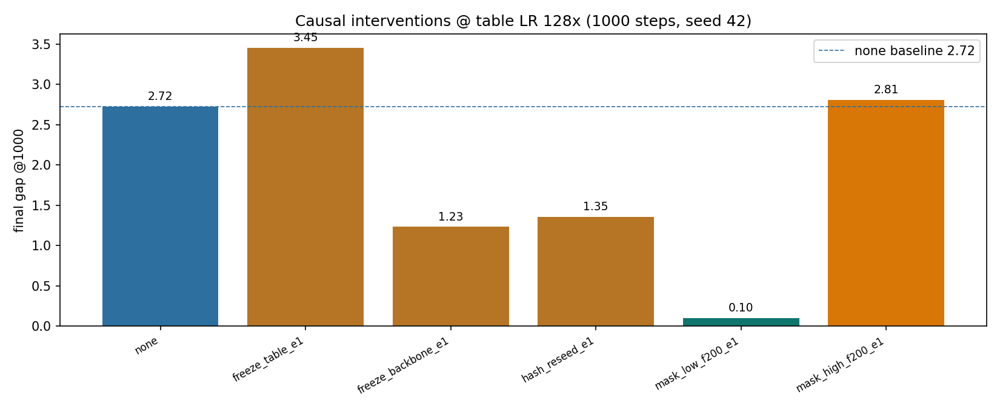 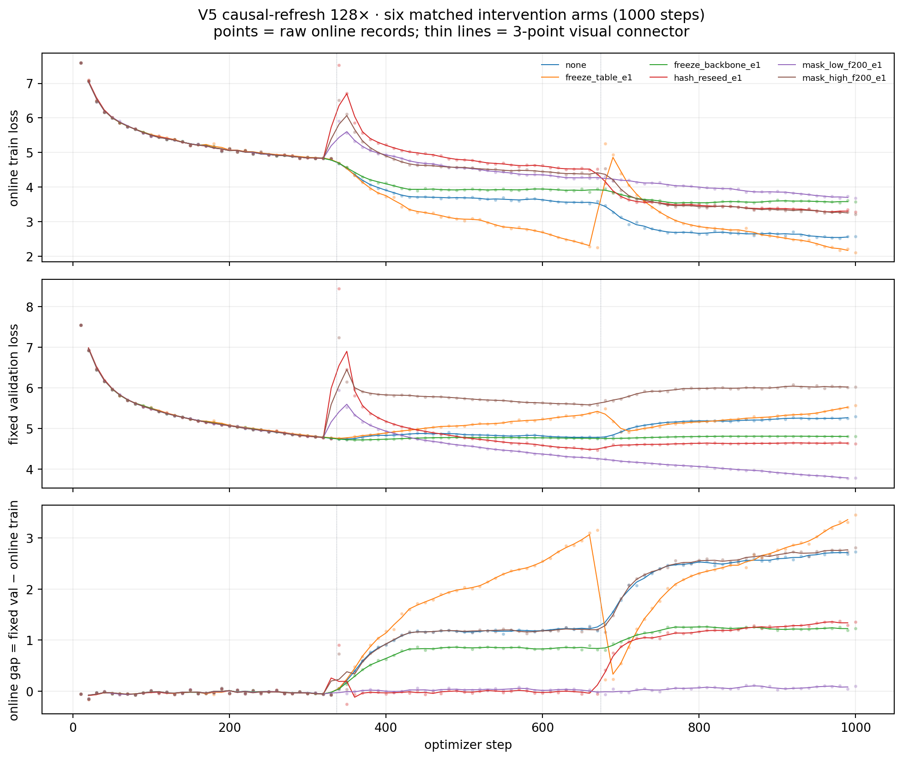 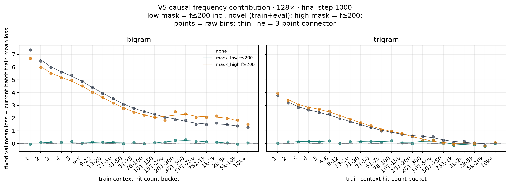  causalv5c_{none,hash_reseed,mask_low_f200,mask_high_f200,freeze_table,freeze_backbone}_e1_128x_fixed（128× 主批，旧 f>t 语义的 mask 臂仅作参考）；阈值扫描图源已全部替换为 新 f≥t 语义的 causalv5m2_mask_high_t{1,2,5,10,25,50,100,200,400,800,1600,3200,6400,12800}_e1_fixed（14 点全量重刷，1000 步、seed 42、epoch-2 边界，每 run 的 high_context_counts 与 freq_index.npz f≥t 实测逐一核对）。全部到 step 1000、无 NaN/Inf。hash_reseed 只换 context→row 映射、保留表权重与 RMSProp state：单边界（e1）gap=1.354，epoch-2+epoch-3 双边界（causalv5c_hash_reseed_e1e2）gap=0.069，证实持续对齐破坏才能压制重写；mask 语义为 low: f≤t（含 novel f=0） 与 high: f≥t 的互补集合；mask 为 context 级，high 模式对 t>0 不屏蔽 novel（f=0），扫描止于 t=1。全量屏蔽的 gap 预期接近同预算 no-gram 对照，不保证为数学上的 0。
|
✅ 14/14 完成：阈值扫描已按新 f≥t 语义全量重刷（causalv5m2，t=1…12800，峰值 t=200 gap 2.824，t≥100 平台 ~2.72–2.82，t≤25 下降至 t=2 最低 1.752、t=1 回升 1.927）；hash-reseed 双边界 e1+e2 done（gap 0.069）；mask_high t200（f≥t）=2.824。核心 7 臂 + 双边界 reseed + 14 点扫描全部回填 §35.8 | |
| 三轴 scaling (S1) |
S1 epoch 轴 · fixed-step（历史 precursor） | 历史 L1–L4 前缀（42/84/168/337 batches）；both 与 no-gram；1000 步 | 历史 online gap vs epoch 长度与 both / no-gram 对照；当前正式 no-compile 三 epoch 阵列见下方 s1v5_128_ep_tri_*xL4_3ep（trigram-only）。历史图片不在当前登记表展示。 |
⚠️ 历史 precursor；由当前 v5 三 epoch 阵列取代 | |
| S1 epoch 轴 · fixed-epoch（历史） | 历史 fixed-epoch 对照；当前登记表不再展示已被 S1 v5 三 epoch 阵列覆盖的图片。 | ⚠️ 不纳入当前 v5 结论；恢复时需单独重注册 | |||
| S1 table size 轴（历史 4-layer/2-hash） | tbl_{TM}_{arm}；logical addresses 2R；seed 42/43/44；1000 步 online gap |
历史 table-size 双对数局部斜率、collision / occupancy 对照；当前登记表不再展示已被 clean-table v5 轴覆盖的图片。 | ⚠️ 历史 compile / 旧表架构；不能替代 clean 单表 | ||
| S1 table size 轴（v5 clean 单表，bi/tri 分开） | bigram-only 与 trigram-only 分别改变各自 clean-table R；另一张表关闭；各 31 个近对数点，R=1…2.347M（含小 R 扩展）；1000 步末端；seed 42 | 两条正式单表轴：bigram-R 与 trigram-R 各 31 点。净 gap（减 no-gram floor 0.02，nogram 实测 0.0234、小 R 平台均值 0.0196）的分窗口 log–log 拟合：(G_bi−0.02)∝R^0.58（R 2e3–2e5，n=12，R²=.997）与 (G_tri−0.02)∝R^0.66（R 1e5–9.3e5，n=8，R²=.9997）；raw gap（不减 floor）敏感性斜率 0.50 / 0.65。小 R（≲1e4）塌缩区保留为原始空心点但不进入拟合；大 R 端 bigram 在 R≈3e5 后、trigram 在 R≈1.2e6 后进入饱和。负载 K/R 仍单独展示；formal run 未记录 occupied rows，因此不推断 collision。K=训练频率索引中的 distinct contexts，R=被扫描 clean table 的 physical rows；K/R 是负载比，不是 collision rate。
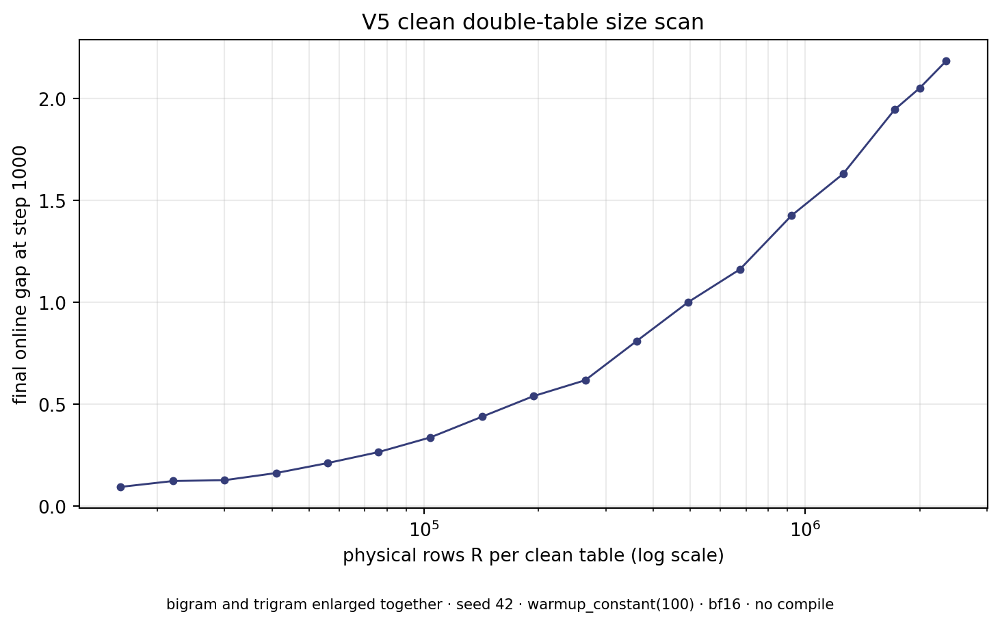 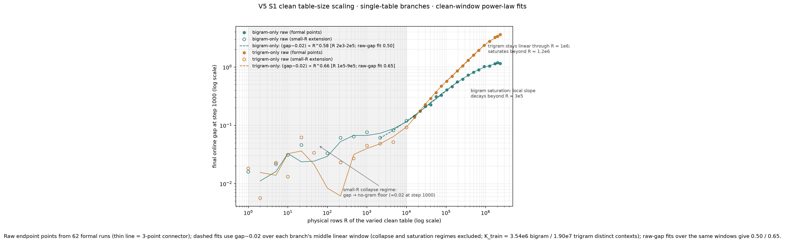 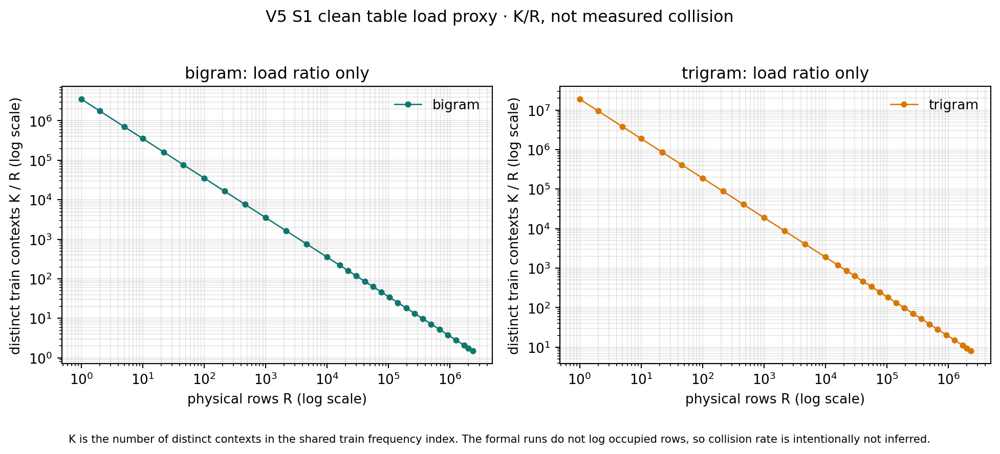 s1v5_128_tbl_bi1_R*_fixed 与 s1v5_128_tbl_tri1_R*_fixed，共 62 个 run（每条单表轴 31 点），seed 42、step 1000；bigram-only / trigram-only 均关闭另一张表。双对数拟合使用减 floor（0.02）后的净 gap，只取各分支线性窗口（bigram R 2e3–2e5、trigram R 1e5–9.3e5）；小 R 塌缩区原始点保留为空心点、不进入拟合，也不被删除或平滑。load 图只使用共享 freq_index.npz 的 K/R；collision rate 未测量，不能从 K/R 反推。
|
✅ 62/62 完成（bigram-R 31/31；trigram-R 31/31） | ||
| S1 table size 轴（早期 clean 单表） | bigram / trigram 分支分别扫 R；bigram 29 点 + perfect-map，trigram 6 点；seed 42、step 1000；历史横轴使用各自的 context-count 归一化 | 早期 clean 单表首扫的局部形状；不能与当前两条正式 v5 单变量轴合并。历史图片转入快照。 | ⚠️ 早期 clean 单表、单 seed；只保留局部形状 | ||
| S1 frequency 轴（历史 precursor） | L4 epoch_batches=337；bigram/trigram/both/nogram；1000 步；exact-frequency |
历史 frequency precursor，保留作溯源，不承担当前 v5 exact-f 结论。 | ⚠️ 历史数据；不替代当前正式 frequency run | ||
| S1 backbone safety（v5） | 长训 no-gram（8000 步） | 无表 backbone 是否产生 online gap；旧图只作历史参照
 |
✅ 8000/8000 完成；final gap=1.102 | ||
| S1 v5 formal scaling · table-size bigram-only（128×） | 只开启 bigram，改变其 physical rows；trigram 关闭；
R=1…2.347M；31 点（含 R≤10000 小 R 扩展）；1000 steps；
保留 337/674/1000 |
bigram-only endpoint gap–R；K/R load proxy；不混用已被替代的双表轴。统一双对数图见上方 clean-table 图集。 | ✅ 31/31 完成；step-1000 gap 范围 −0.006–1.191；净 gap（减 floor 0.02）线性窗口 R 2e3–2e5 log-log slope=0.58（R²=.997，n=12；raw-gap 敏感性 0.50）；R≤约1e4 塌缩到 no-gram floor、R≈3e5 后饱和；337/674/1000 检查点齐全，table LR=128×、β₂=.99 | ||
| S1 v5 formal scaling · table-size trigram-only（128×） | 只开启 trigram，改变其 physical rows；bigram 关闭；
R=1…2.347M；31 点（含 R≤10000 小 R 扩展）；1000 steps；
保留 337/674/1000 |
trigram-only endpoint gap–R；K/R load proxy；不混用已被替代的双表轴。统一双对数图见上一行的 clean-table 图集。 | ✅ 31/31 完成；step-1000 gap 范围 −0.032–3.617；净 gap（减 floor 0.02）线性窗口 R 1e5–9.3e5 log-log slope=0.66（R²=.9997，n=8；raw-gap 敏感性 0.65）；R≤约1e4 塌缩到 no-gram floor、R≈1.2e6 后饱和；337/674/1000 检查点齐全，table LR=128×、β₂=.99 | ||
| S1 v5 formal scaling · frequency-bin 主实验（128×） | input；bigram+trigram；epoch_batches=337；
1000 steps；table LR=128×；β₂=.99；保留 337/674/1000；data/freq_index.npz |
主实验的 frequency-bin fraction + raw gap、exact-frequency sufficient statistics；novel 只有 val loss，不定义 gap；train 侧取当前 batch online loss。
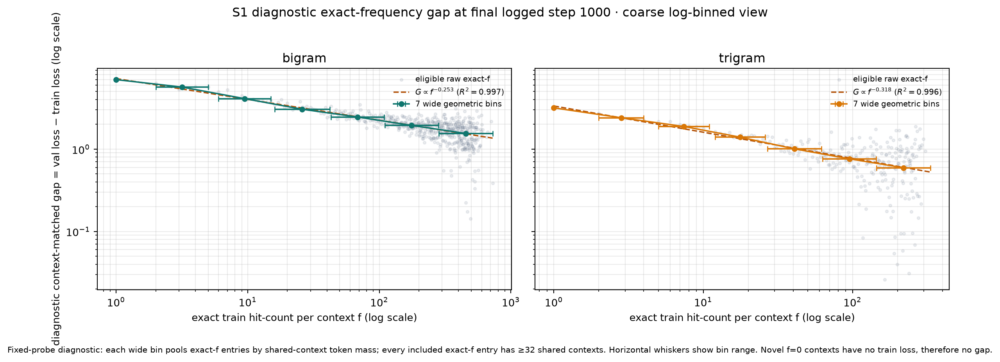 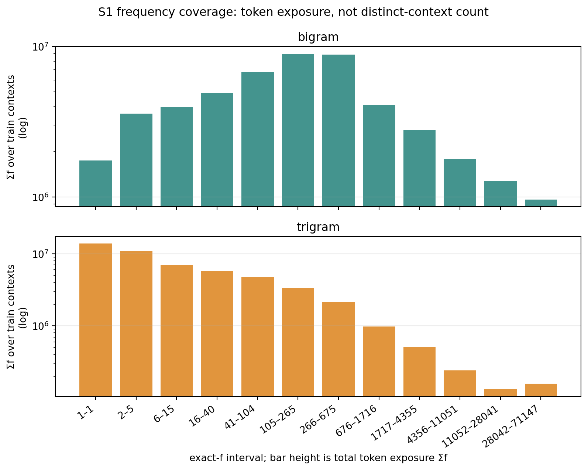 s1v5_128_frequency_main_fixed/exact_freq_loss.jsonl 与共享 data/freq_index.npz；最后 logged step=1000。exact-f 图保留 eligible raw points，并按 shared-context token mass 聚合为 7 个宽几何 bin；描述拟合 bigram G∝f^-0.252746（R²=.997165）、trigram G∝f^-0.318121（R²=.995548）。这是 fixed-probe context-matched 诊断，不是主 scalar gap 或跨 seed 普适指数。
|
✅ 完成；final gap=2.736；337/674/1000 三个检查点齐全 | ||
| S1 v5 formal scaling · epoch-length（3 epoch） | 12 个 L4 倍数：0.125…2.0×L4；
epoch_batches=42…674；trigram-only；每个 run 3 个完整 epoch；
step = 126…2022；table LR=128×；β₂=.99 |
按 epoch 1/2/3 对齐的 online train / fixed val / gap 轨迹，竖线标注边界；横轴用“epoch 数”，不使用 L1–L4 jargon。
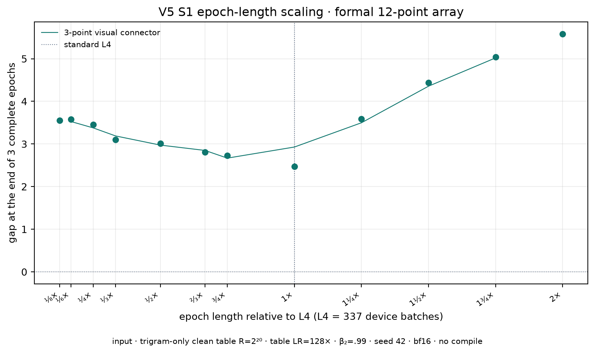 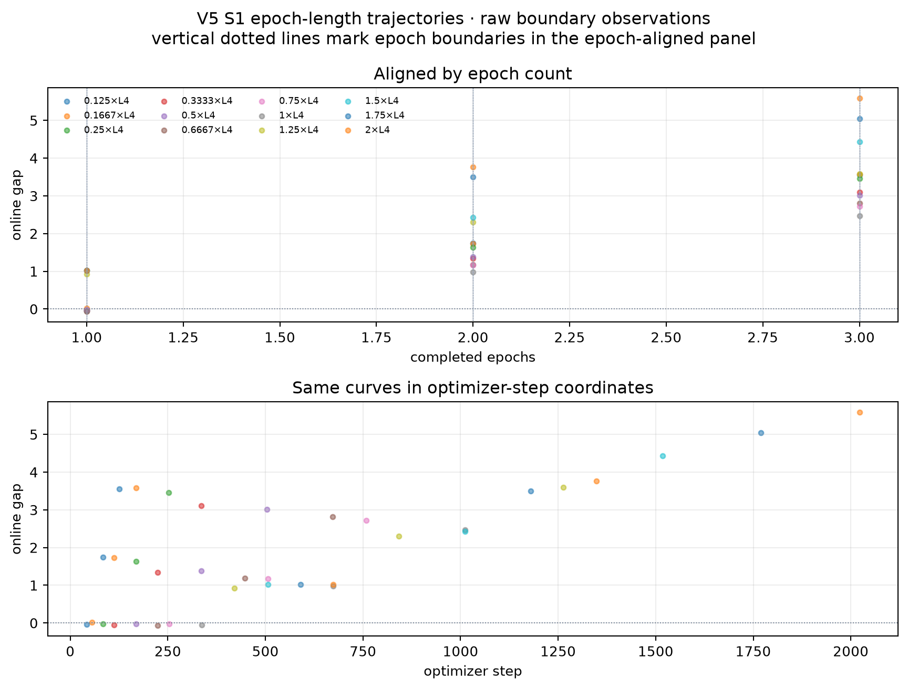 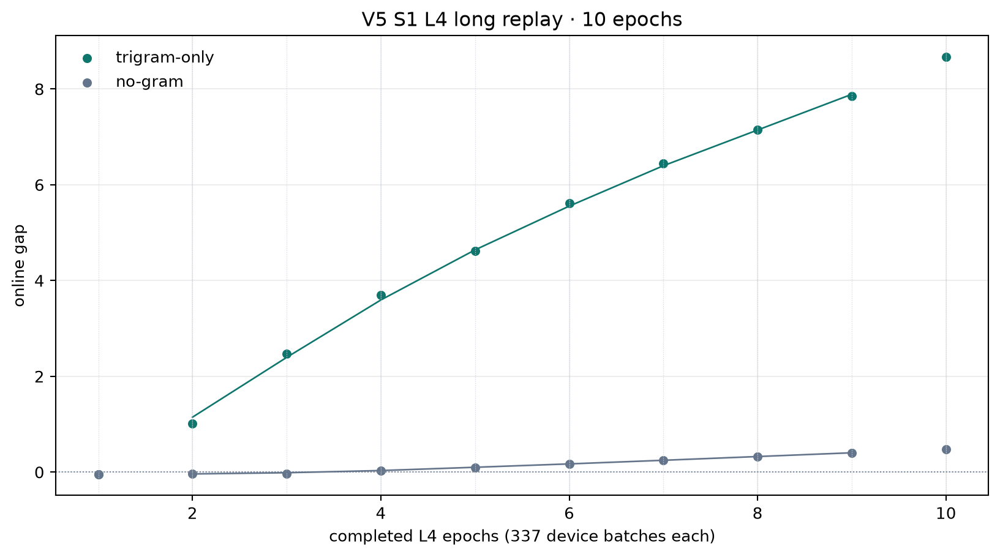  s1v5_128_ep_tri_*xL4_3ep_fixed 与 L4 trigram-only/no-gram 长训；点为原始 online 记录，细线为 3 点视觉连接，竖线为 epoch boundary。
|
✅ 12/12 完成；U 形最低 gap=2.469 @1×L4；0.125×=3.552、2×=5.582 | ||
| S1 v5 L4 long replay（10 epoch） | trigram-only + no-gram；L4=337 batches/epoch；10 epochs；
3370 steps；table LR=128×；β₂=.99 |
gap 随 epoch 编号的 trajectory；左侧为 trigram-only、both、no-gram 的原始 boundary gap，右侧为逐 epoch gap 增量；每个 epoch 边界显式标注。 | ✅ 完成；L4 trigram-only gap=8.675、no-gram=0.480 @3370；epoch 2–10 线性参考约 0.96/epoch，但增量从早期峰值逐渐降至约 0.7–0.8，支持凹增长/渐缓而非已证实的平台 | ||
| 自然语言 5gram |
N1–N4 order=5 | 5gram context +trigram 注入 / 纯 transformer / LR ×1 / LR ×4；seed 42/43 | per-bucket gap；gap-freq 图
  |
✅ 完成 | |
| 受控数据 干预 |
ngram5 数据生成（alpha 上采样） | 固定极简 setting，只动数据侧 alpha | gap(r) ≈ (K_eff−1)/r 检验 | 🟡 独立包，与主线正交 | |
| toy 理论 |
L1 查表记忆 × replay | 独立自包含 toy 实验；纯 numpy/torch；结果在 tasks/lN_*/results/ |
记忆-gap 主矩阵
 |
✅ | |
| L2 Markov 精确 gap | markov 三臂闭式解曲线
 |
✅ | |||
| L3 单 context 采样律 | gap(r) 采样律图
 |
✅ | |||
| L4 幂律合成数据 | gap vs samples 幂律
 |
✅ | |||
| L5 优化器伪影 | RMSProp v 锯齿 / 表容量对照
 |
✅ |
{kind=link}
{kind=link}
{kind=link}
{kind=link}
{kind=link}
{kind=link}
{kind=link}
{kind=link}
{kind=link}
{kind=link}
{kind=link}
{kind=link}
{kind=link}
{kind=link}
{kind=link}
{kind=link}
{kind=link}
{kind=link}
{kind=link}
{kind=link}
③ 补充说明
当前登记表只展示已验收的 v5 图作为现行证据：主线、causal、optimizer、dose refresh 与 S1 正式三轴图均来自带 _fixed 的证据目录；图中点是原始 online 记录，若有细线仅表示 3 点视觉连接。历史 v2/v3/旧 S1 图片已从当前页面移除，完整清理前页面见历史快照。
图片只在对应实验行展示一次；没有被当前 v5 证据覆盖的独立 toy / 受控数据实验仍保留。旧图源资产随历史快照保存，不作为当前结论来源。
Scaling 数值包与后续理论拟合入口
正式 S1 统计已由 docs/plot_scripts/analyze_v5_scaling.py 从
data/runs_scaling/*_fixed/ 重新解析。它输出描述性拟合，不把单 seed
结果当作力学定律：
- table-size：净 gap（减 floor 0.02）分窗口拟合 bigram
(G−0.02)∝R^0.5761（R 2e3–2e5，n=12，R²=.9969）、trigram(G−0.02)∝R^0.6648（R 1e5–9.3e5，n=8，R²=.9997）；raw gap（不减 floor）敏感性斜率 0.5010 / 0.6526。每条单表轴 31 个 run；R≤约1e4 进入 no-gram floor（nogram 实测 0.0234，小 R 平台均值 0.0196），塌缩区不进入拟合；bigram R≈3e5 后、trigram R≈1.2e6 后饱和。旧的 R≥16000 raw-gap 拟合（0.429/0.657）混入两端机制，已废弃。 - epoch-length：在 ln(L4 multiplier) 上的二次描述拟合顶点为
0.411502×L4，预测 gap=2.648528（R²=.774155）；另有 L4 10-epoch boundary 图，显示 gap 增长逐渐变缓但尚未达到明确平台。 - dose：5× 以内正 gap 的 log-log slope 为 −1.726983（R²=.887225）；5× 到 6× 之间发生符号翻转，不报告全区间幂律。
- exact-frequency：bigram slope −.252746（R²=.997165），trigram slope −.318121（R²=.995548）；按 shared-context token mass 的 7 个几何 bin 聚合。
可复核文件： 统计摘要 · 拟合系数 CSV · table-size 原始点 · epoch 原始点 · dose × frequency 原始点。
④ 核心代码与「来源唯一可追溯」
| 模块 | 文件 | 职责 |
|---|---|---|
| 训练主程序 | code/train.py（2003 行） | vanilla nanoGPT + n-gram 表；3 注入点；MixedOptimizer（表 RMSProp/AdamW/SGD + backbone AdamW）；fixed 数据模式；current-batch freq-bin、fixed-probe exact-freq 与 scalar gap；干预接线 |
| 频率索引 | code/ngram_freq.py（501 行） | GlobalFrequencyIndex.build_from_chunks，与模型 hash 逐位置一致 |
| 表 occupancy | code/table_occupancy.py（248 行） | 行占用 / 碰撞 / 负载统计；正式 S1 v5 run 未写 occupied rows 时不强行推断 collision |
| replay/epoch 纯函数 | code/gap_experiment.py（312 行） | 主线与 ngram5 共用 |
| 数据准备 | code/prepare_data.py / make_ngram_blocks.py | token shards；受控 block 构造 |
| 集群启动器 | code/cluster/*.sh | run_v5_clean.sh 是单 run 契约；run_v5_main_manifest.sh 调度主线家族；run_v5_table_grid.sh 调度 18 点双表 R 网格。旧 launcher 仅供历史溯源。 |
| 受控数据干预 | ngram5_freq_gap/ | 第四维度：动数据不动模型 |
| 作图脚本 | docs/plot_scripts/ | 当前 canonical：plot_v5_registry_figures.py（登记表主图）与 analyze_v5_scaling.py（CSV/拟合）；图进 docs/figs/ |
| toy 线 | tasks/l1..l5/ | 独立自包含，纯 numpy/torch |
注入与训练原理（一句话版）
- 注入：
input为主——x = wte(idx) + wpe(pos) + Σ ngram_ve，n-gram 向量直接加在 token 嵌入上（over-encoding，不走 attention）；y注入在 attention 输出后加回 residual；v注入在 attention 的 V 上（路径最间接）。 - 表架构：新 SSOT 是 clean 单表
nn.Embedding(R, 768)，一个 context → 一行 → 一个完整向量，单层、单 hash（--bigram_clean_table R，R 任意；与 perfect-map 组合 = 零碰撞锚点）。旧 4 层求和 + 2-hash 拼接（vocab×mult表）已降级为历史框架。 - 优化器：表与 backbone 分开——表 RMSProp 无动量
(0.0, 0.99)，当前标准表 LR 128×（实际0.0768）；backbone AdamW。β₁=0 即无动量（table_betasbug 已修：b2 = self.table_betas[1]）。历史 2× 结果只作为对照。 - 训练：
fixed模式 = 固定顺序 epoch replay（每轮从头重放同一 shard，L4=337 batches/epoch）；grad_accum 使 total batch = 147,456 tokens；bf16 autocast；默认不 compile。
来源是否唯一确定、可追溯 → 是
- 单一权威数据源：主线为
data/runs_fixed/*_fixed/，scaling 为data/runs_scaling/*_fixed/；data/runs/与无后缀副本已作废。v5 的 freq-bin train 侧=当前训练 batch 的逐 token loss；exact-frequency 是 fixed-probe context-matched 诊断。 - 口径变更必须新 run_id（P2）：v2→v3 的 freq-bin train 侧改动即因此新起
_v3后缀；_fixed标记「修复后」，_v3标记「current-batch 口径」，命名即口径。 - 代码即契约：launcher 显式传全部关键参数，不依赖默认值；本轮正式 source revision 为
7583ae3222ffb4bbfb13262295a6a828e1f08d3f，并在跨机跑前核对train.py=c4729b30e6f3e842b3321dc701b55bbb、ngram_freq.py=e4f45f5be1317c33e6b3c39bc6cb4bc5、run_v5_clean.sh=8c86d03f79cd42d0cd559259bc77224e。 - 文档权威性分级：
agents.md§1（SSOT）→experiment-lines.md（全景）→experiment-log.md（登记簿+勘误）→claims-ledger.md（断言台账）。结论必须带 run_id / step / seed。 - 历史框架显式隔离：clean-table 重做后旧 4 层架构标记
[HISTORICAL 4-LAYER FRAMEWORK]；current shell / Muon / RoPE 系结论一律[DEPRECATED SETTING]。
当前留白：本轮 v5-refresh 与 S1 formal 图均已由本地 `_fixed` 证据生成；§32 的 32×·β₂=.999 retry 也已完成并核对配置。历史 v10/pre-v2 数值只在历史 section 中保留，不升级为当前结论。